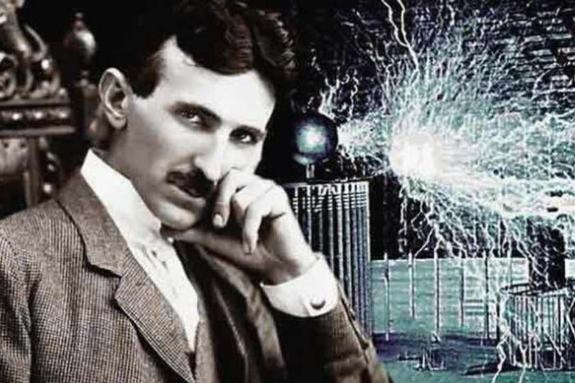

Nikola Tesla

Nikola Tesla was a Serbian-American inventor, physicist, mechanical engineer, and electrician. He is thanks to his contribution in designing the alternating current electrical system. Born and raised in Austria, Tesla completed his education in engineering and physics in the 1870s
- 1856 - Nikola Tesla was born at midnight between the 9th and 10th of July, during a lighting storm.
- 1862 Tesla starts elementary school in Smiljan, where he learned to speak german, mathematics and religion.
- 1863 Nikola Tesla - 1863 After the death of his fourteen year old brother Dane, the Tesla family moved to Gospić where he continues elementary school.
- 1870 Nikola Tesla - 1870 Tesla starts Higher real gymnasium in Rakovac (a village near Karlovac). The school was organized according to german and austrian schools and was one of the best high schools at the time. Professor Martin Sekulić (1833- 1905) taught Tesla mathematics and physics.
- 1873 After graduating from Rakovac, Tesla returns home and suffers from cholera for nine months.
- 1875 Nikola Tesla - 1875 Tesla enrolls to the Polytechnic University in Graz with a scholarship from the Military frontier.
- 1876 After the Military frontier fell apart Tesla lost his scholarship and doesn't manage to finish his second year of university. In an attempt to cover expenses he begins gambling, playing billiards and poker.
- 1879 Tesla works in Maribor for a short time. After the death of his father he moves back to Gospić and works at the Real gymnasium.
- 1883 Tesla moves to Starsbourg where he builds his first prototype of the induction motor. He goes to Zagreb to acquire a passport.
- 1884 Tesla leaves for New York with a referral from Charles Batchellor and begins working for Edison.
- 1885 Nikola Tesla - 1885 After leaving Edison, Tesla starts his own company called the Tesla Electric and Manufacturing Company and patents his first inventions.
- 1886 During an economic crisis in the U.S. Tesla's company goes bankrupt. He is forced to dig ditches for cabels and the sewer system in New York for two dollars a day.
- 1887 Tesla begins a new company called the Tesla Electric Company with a loan from A.K. Brown, the director of Western Union. He registers his most important patents: multiphase system of transmitting electricity, the induction motor, transformers and generators.
- 1888 Nikola Tesla - 1888 Tesla held a lecture about the advantages of alternating current at the American Insitiute of Electrical Engineers. In Pittsburg he signs a contract with George Westinghouse.
- 1889 He visits Europe for the first time after leaving for the U.S. He visits Paris and Lika. Returning to New York he opens a laboratory on Grand Street. Up until 1892 he lives in the Astor Hotel.
- 1890 Tesla begins researching high voltage and high frequency currents in his laboratory on 33-35 South Fifth Avenue in New York.
- 1891 Tesla recieves american citizenship. He holds a lecture about his experiments with high frequency and alternating currents and their usage in artificial lighting to the American Institute of Electrical Engineers. He registers many patents and develops the Tesla coil. He has a disagreement with J.J. Thornson who impedes on Tesla's discovery of the electron.
- 1892 Tesla's second visit to Europe starts with lectures in London and Paris. His mother dies in April. He visits Budapest, Zagreb and Belgrad. In Zagreb he holds a lecture about the advantages of alternating currents and construction of a hydroelectric plant at Plitvice lakes. He moves to the Gerlach Hotel . He is named the vice president of the American Institute of Electrical Engineers for two years.
- And many Timeline
- 1943 Tesla dies on Januray 7th, around 10.30 p.m. in apartment 3327 on the 33 floor of the New Yorker Hotel, he was 86 years old. The Supreme Court of America grants Tesla the rights to the invention of the radio.
If you have time, you should read more about this incredible human being on his Nikola Tesla Timeline